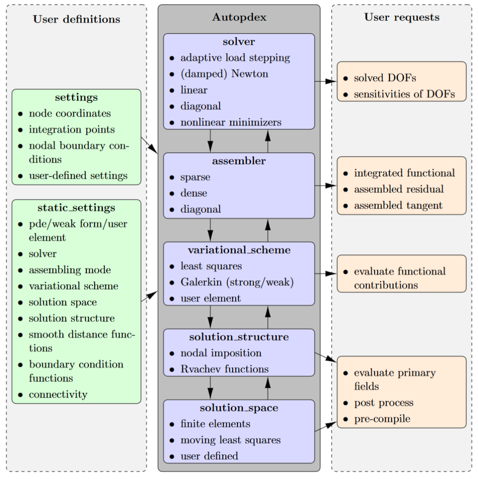

Solver
This module is the central module of the analysis phase. Based on the given entries in settings and static_settings, the functions solver and adaptive_load_stepping can be used to find the roots of the global residual vector. Depending on the settings, linear equation solvers, the Newton-Raphson method, or nonlinear minimizers are utilized. The residual vectors and (in the case of external solvers) the tangent matrix are automatically assembled according to the chosen settings. The solver module uses the assembler, which in turn calls the variational_scheme, the solution_structure, and the spaces modules. Additionally, automatic implicit differentiation in forward or reverse mode via the implicit_diff module is provided for the adaptive_load_stepping function. For solving the linear equation systems, wrappers for different backends on CPU and GPU are available, including Pardiso and PETSc.
{kind=link}
Automatic Solvers
|
Performs adaptive load stepping to solve a nonlinear system of equations. |
|
General solver function to solve a given problem based on provided settings. |
Specific solvers
|
Solves a nonlinear minimization problem using specified optimization methods. |
|
Solves a linear system using the specified backend and solver settings. |
|
Solves a linear system assuming the tangent matrix is diagonal. |
|
Solves a nonlinear system using the Newton-Raphson method. |
|
Solves a nonlinear system using the damped Newton method. |
Linear Solvers for Different Backends
|
Solves a linear system of equations using JAX's matrix free solvers. |
|
Solve a linear system using the PETSc solver (requires PETSc and petsc4py to be installed). |
|
Solve a linear system using the PARDISO solver (requires Intel MKL and pypardiso('lu') or sparse_dot_mkl('qr') to be installed). |
|
Solve a linear system using the PyAMG solver (requires pyamg to be installed). |
|
Solves a linear system using a specified SciPy solver. |
Iterative Solvers/Smoothers
|
Solve Ax = b using Jacobi iterations (experimental). |
|
Damped Jacobi smoother (experimental). |
Utility Functions
|
Convert a JAX BCOO matrix to a SciPy CSR matrix while summing duplicates. |